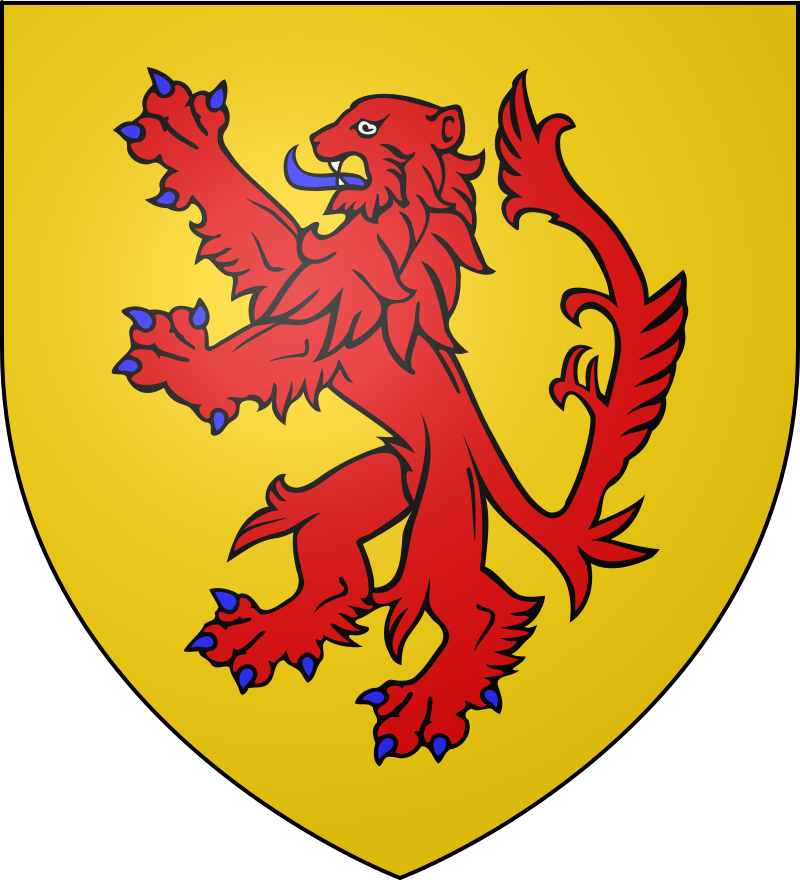
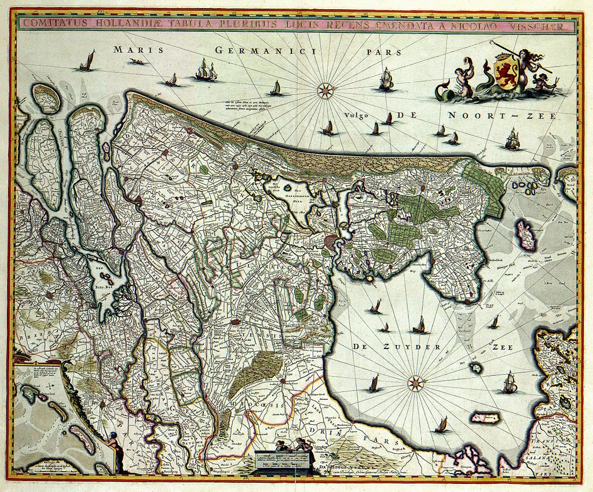
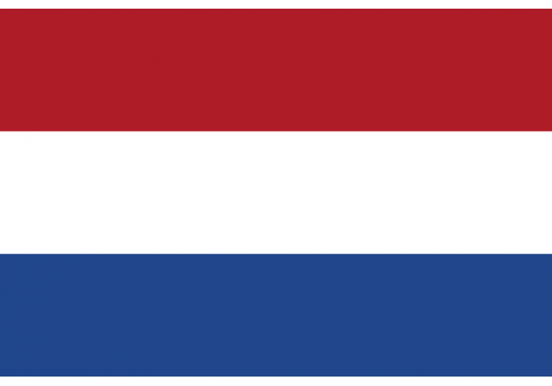

Holanda es una región histórica y cultural situada en la costa occidental de los Países Bajos. Desde 1840, está dividida en dos provincias, Holanda Septentrional (Holanda del Norte) y Holanda Meridional (Holanda del Sur). Antiguamente, el condado de Holanda fue miembro principal de las Provincias Unidas (1581-1795). Debido a su importancia histórica en la región, el topónimo «Holanda» se utiliza para referirse al Estado soberano, y la denominación oficial de éste es la de «Países Bajos». Sin embargo, durante el reinado de Luis I Bonaparte, el Estado llevó el nombre de Reino de Holanda (1806-1810). Lo mismo ocurre con el idioma, el neerlandés, que es conocido tradicionalmente, por extensión, como «holandés» (aunque en realidad el holandés es un "dialecto" del neerlandés). Lo mismo ocurre en el caso del gentilicio, que es neerlandés/a, aunque también se usa «holandés/a».
| Condado de Holanda | Hasta el siglo IX, los habitantes del territorio que se convirtió en Holanda eran de procedencia frisona. La zona era parte de Frisia. A finales del s. IX, Holanda se convirtió en un condado del Sacro Imperio Romano Germánico. El primer conde de Holanda que se conoce con certeza fue Teodorico I, que reinó desde el año 896 hasta el 931. Fue sucedido por una larga lista de condes holandeses, que hasta el 1101 se conocieron como condes de Frisia. Cuando el conde Juan I murió sin descendencia en 1299, el condado fue heredado por Juan II de Avesnes, conde de Henao. En la época de Guillermo V (Casa de Wittelsbach, 1354-1388), el conde de Holanda también fue el conde de Henao y de Zelanda. Holanda se convirtió en parte de los Países Bajos Borgoñones, y más tarde, en 1477, pasó a formar parte de las Diecisiete Provincias de los Habsburgo. En el siglo XVI, el condado se convirtió en la región europea más densamente urbanizada, con la mayoría de la población viviendo en las grandes urbes. En los Países Bajos Borgoñones, Holanda era la región dominante del norte; la influencia política de Holanda determinó en gran medida el dominio borgoñón sobre la zona. El último conde de Holanda fue Felipe II de España. Fue depuesto oficialmente en 1581 mediante el Acta de abjuración, aunque los monarcas hispánicos conservaron la intitulación de «condes de Holanda» hasta la Paz de Münster, firmada en 1648. |
 |
|---|---|---|
| Provincias Unidas | En la rebelión holandesa contra los Habsburgo durante la Guerra de los Ochenta Años, las fuerzas navales de los rebeldes —los «mendigos de mar»— establecieron su primera base permanente en Brielle, en 1572. De esta forma, Holanda, ahora con estatus de Estado soberano en una confederación holandesa más grande, se convirtió en el centro de la rebelión. En el siglo XVII, Holanda se convirtió en el centro cultural, político y económico de las Provincias Unidas, convirtiéndose en una de las mayores potencias europeas, proceso que se conoce como Siglo de Oro neerlandés. Después de que el rey de España fuera depuesto como conde de Holanda, el poder ejecutivo y legislativo recayó en los estados que conformaban las Provincias Unidas, que fueron liderados por la figura del Gran Pensionario. |
 |
| Estado Satélite Frances | La formación de la República Bátava, inspirada en la Revolución francesa, dio lugar a un gobierno más centralizado. Holanda se convirtió en la provincia de un Estado unitario. La independencia de la región se frenó debido a una reforma administrativa en 1789, en la que el territorio holandés fue dividido en varios departamentos: Amstel, Delf, Texel, y parte de las cuencas del Escalda y el Mosa. Desde 1806 hasta 1810, Napoleón Bonaparte controló el Estado vasallo, el Reino de Holanda, gobernado de iure por Luis I Bonaparte y, en un breve período de tiempo, por el hijo de Luis, Luis Napoleón Bonaparte. El reino abarcaba gran parte del territorio que conforma los Países Bajos actuales. La denominación del reino refleja lo común que era equiparar el resto de los territorios como parte de la región de Holanda. Durante el período en que los Países Bajos fueron anexionados por el Primer Imperio Francés e incorporados a Francia (1810–1813), Holanda fue dividida en los departamentos de Zuyderzée y Bouches-de-la-Meuse. | |
| Reino de los Paises Bajos | Después de 1813, Holanda se convirtió en provincia del Reino Unido de los Países Bajos. Más tarde, en 1840, Holanda se dividió en las actuales provincias de Holanda Septentrional y Holanda Meridional, como resultado de la Revolución belga de 1830. Desde 1850, un fuerte proceso de construcción nacional provocó que los Países Bajos fueran culturalmente unificados y económicamente modernizados, haciendo de las ciudades de Holanda la base de su economía |  |